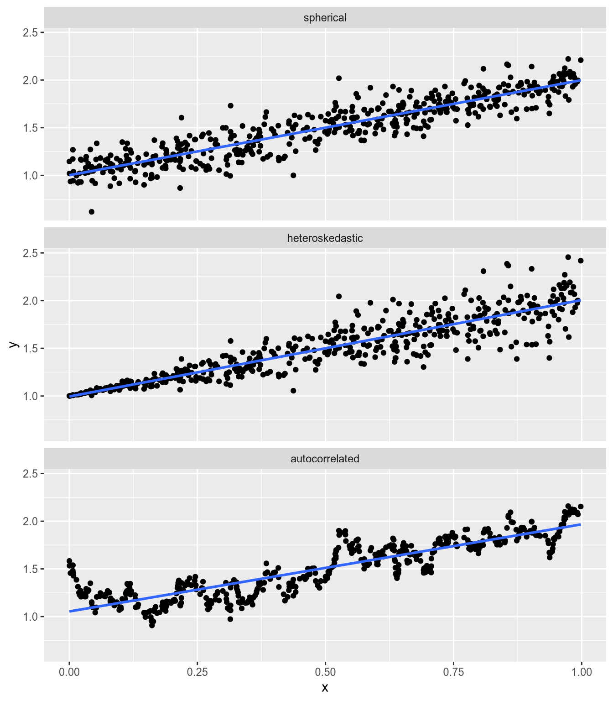

7 Reintroduction to the Linear Model
Having learned some matrix algebra, let us now return to the world of statistics. We are going to take what we learned about regression and ordinary least squares in the bivariate case, then generalize it to a setting with potentially many variables. To make that task feasible, we will rely on the tools of matrix algebra that we learned last week.
7.1 The Linear Model in Matrix Form
We have a sequence of observations indexed by \(n \in \{1, \ldots, N\}\). Each observation consists of a response, \(Y_n\), a real number; and a vector of \(K\) covariates, \[ \mathbf{x}_n = \begin{pmatrix} x_{n1} \\ x_{n2} \\ \vdots \\ x_{nK} \end{pmatrix}. \] Just like in bivariate regression, our goal is to estimate the conditional expectation of the response given the covariates, \(E[Y_n \,|\, \mathbf{x}_n]\). To make that task feasible, we will assume the relationship is linear, \[ E[Y_n \,|\, \mathbf{x}_n] = \beta \cdot \mathbf{x}_n, \] where \(\beta\) is the \(K \times 1\) vector of coefficients, \[ \beta = \begin{pmatrix} \beta_1 \\ \beta_2 \\ \vdots \\ \beta_K \end{pmatrix}. \] Our data model is \[ Y_n = \beta \cdot \mathbf{x}_n + \epsilon_n, \] where \(\epsilon_n\) is “white noise” error that is uncorrelated with the covariates. (More on this in a second.)
This data model looks a little bit different than our bivariate linear model, which you’ll recall was \[ Y_n = \alpha + \beta x_n + \epsilon_n. \] What happened to \(\alpha\), the intercept? When working with the multivariate linear model, it will make our lives easiest to treat the intercept like any other coefficient. Specifically, we will assume \(x_{n1} = 1\) for all \(n\), and we will treat \(\beta_1\) as the intercept. With \(K = 2\), our multivariate model becomes \[ \begin{aligned} Y_n &= \beta \cdot \mathbf{x}_n + \epsilon_n \\ &= \begin{pmatrix} \beta_1 \\ \beta_2 \end{pmatrix} \cdot \begin{pmatrix} 1 \\ x_{n2} \end{pmatrix} + \epsilon_n \\ &= \beta_1 + \beta_2 x_{n2} + \epsilon_n, \end{aligned} \] which is the same as our bivariate regression model, replacing the intercept \(\alpha\) with \(\beta_1\), the slope \(\beta\) with \(\beta_2\), and the covariate \(x_n\) with \(x_{n2}\).
If we were to stack up all of our data, we would have \(N\) equations, \[ \begin{aligned} Y_1 &= \beta \cdot \mathbf{x}_1 + \epsilon_1, \\ Y_2 &= \beta \cdot \mathbf{x}_2 + \epsilon_2, \\ &\vdots \\ Y_N &= \beta \cdot \mathbf{x}_N + \epsilon_N. \end{aligned} \] Like any system of linear equations, we can write this one more easily in matrix form. Let \(\mathbf{Y}\) be the \(N \times 1\) vector that collects the response, \[ \mathbf{Y} = \begin{pmatrix} Y_1 \\ Y_2 \\ \vdots \\ Y_N \end{pmatrix}. \] Let \(\mathbf{X}\) be the \(N \times K\) matrix that collects the covariates, \[ \mathbf{X} = \begin{bmatrix} x_{11} & x_{12} & \cdots & x_{1K} \\ x_{21} & x_{22} & \cdots & x_{2K} \\ \vdots & \vdots & \ddots & \vdots \\ x_{N1} & x_{N2} & \cdots & x_{NK} \end{bmatrix} = \begin{bmatrix} 1 & x_{12} & \cdots & x_{1K} \\ 1 & x_{22} & \cdots & x_{2K} \\ \vdots & \vdots & \ddots & \vdots \\ 1 & x_{N2} & \cdots & x_{NK} \end{bmatrix}. \] The \(n\)’th row of \(\mathbf{X}\), which we will write \(\mathbf{x}_n\) (lowercase), contains the covariates for the \(n\)’th observation. The \(k\)’th column of \(\mathbf{X}\), which we will write \(\mathbf{X}_k\) (uppercase), contains the value of the \(k\)’th covariate for every observation. Finally, we will collect the error terms in an \(N \times 1\) vector, \[ \epsilon = \begin{pmatrix} \epsilon_1 \\ \epsilon_2 \\ \vdots \\ \epsilon_N \end{pmatrix}. \] We can now write a model of the full data, \[ \mathbf{Y} = \mathbf{X} \beta + \epsilon. \]
It is worth pausing to clarify what is known and unknown here.
The covariate matrix \(\mathbf{X}\) and the response vector \(\mathbf{Y}\) are known. They are our data.
The regression parameters \(\beta\) are unknown. They are what we are trying to learn from the data.
The error term \(\epsilon\) is also unknown. We can think of each observation of \(Y_n\) as being a combination of “signal,” \(\mathbf{x}_n \cdot \beta\), and “noise,” \(\epsilon_n\). The fundamental problem is that we don’t know exactly what the signal is and what the noise is.
7.2 The OLS Estimator
Given a linear model along the lines described above, the formula for the OLS estimate of \(\beta\) is \[\hat{\beta}_{\text{OLS}} = (\mathbf{X}^\top \mathbf{X})^{-1} \mathbf{X}^\top \mathbf{Y}.\] What I want to convince you of now is that if we start in the same place as we did with bivariate regression—that we want to find coefficients that minimize the sum of squared residuals—then we will end up with this formula.
Consider the linear model with three covariates, \[ Y_n = \beta_r r_n + \beta_s s_n + \beta_t t_n + \epsilon_n. \] Let’s do like we did with bivariate regression, and imagine estimating the parameters of the model by least squares. Let \((b_r, b_s, b_t)\) denote an estimate of the parameters.22 We will set up the sum of squared errors as a function of the parameters, \[ \mathop{\rm SSE}\nolimits(b_r, b_s, b_t) = \sum_n (Y_n - b_r r_n - b_s s_n - b_t t_n)^2. \]
Just as we did to derive the bivariate OLS estimator, let’s begin by taking the partial derivative of the SSE with respect to the coefficient on \(r\), then equalizing it to zero. \[ \frac{\partial \mathop{\rm SSE}\nolimits}{\partial b_r} = -2 \sum_n r_n (Y_n - b_r r_n - b_s s_n - b_t t_n) = 0. \] Dividing each side by \(-2\) and rearranging terms gives us \[ \sum_n r_n (b_r r_n + b_s s_n + b_t t_n) = \sum_n r_n Y_n. \] We can break up the left-hand sum into three individual sums to get \[ \left( \sum_n r_n^2 \right) b_r + \left( \sum_n r_n s_n \right) b_s + \left( \sum_n r_n t_n \right) b_t = \sum_n r_n Y_n, \] which is a linear condition for our proposed coefficient estimates, \((b_r, b_s, b_n)\). If we go through the same steps with \(\partial \mathop{\rm SSE}\nolimits/ \partial b_s\) and \(\partial \mathop{\rm SSE}\nolimits/ \partial b_t\), we obtain the linear system \[ \begin{aligned} \left( \sum_n r_n^2 \right) b_r + \left( \sum_n r_n s_n \right) b_s + \left( \sum_n r_n t_n \right) b_t &= \sum_n r_n Y_n, \\ \left( \sum_n r_n s_n \right) b_r + \left( \sum_n s_n^2 \right) b_s + \left( \sum_n s_n t_n \right) b_t &= \sum_n s_n Y_n, \\ \left( \sum_n r_n t_n \right) b_r + \left( \sum_n s_n t_n \right) b_s + \left( \sum_n t_n^2 \right) b_t &= \sum_n t_n Y_n. \end{aligned} \] This is a linear system of three equations in three unknowns, namely the coefficient estimates \((b_r, b_s, b_t)\). You’ll remember from last week that we can write linear systems in terms of matrix algebra, and then use matrix inversion to solve these systems. Once we solve this system, we’ll have the coefficient estimates that minimize the sum of squared residuals. Let’s write it up in the form \(\mathbf{A} \mathbf{b} = \mathbf{c}\), where:
- \(\mathbf{A}\) is the \(3 \times 3\) matrix of coefficients (known)
- \(\mathbf{b}\) is the \(3 \times 1\) vector we’re trying to solve for (unknown for now, will give us the OLS formula once we’ve solved the system)
- \(\mathbf{c}\) is the \(3 \times 1\) vector containing the value of each of three equations we are solving for (known)
The matrix form of our system of equations, divided into these three components, is as follows \[ \underbrace{\begin{bmatrix} \sum_n r_n^2 & \sum_n r_n s_n & \sum_n r_n t_n \\ \sum_n r_n s_n & \sum_n s_n^2 & \sum_n s_n t_n \\ \sum_n r_n t_n & \sum_n s_n t_n & \sum_n t_n^2 \end{bmatrix}}_{\mathbf{A}} \underbrace{\begin{bmatrix} b_r \\ b_s \\ b_t \end{bmatrix}}_{\mathbf{b}} = \underbrace{\begin{bmatrix} \sum_n r_n Y_n \\ \sum_n s_n Y_n \\ \sum_n t_n Y_n \end{bmatrix}}_{\mathbf{c}}. \]
Now before we go on, let’s think about where we want to end up. Remember I claimed the OLS formula is \(\hat{\beta}_{\text{OLS}} = (\mathbf{X}^\top \mathbf{X})^{-1} \mathbf{X}^\top \mathbf{Y}\). Let’s take a closer look at each portion of this formula. For our example here with the three variables \(r\), \(s\), and \(t\), we have \[ \mathbf{X} = \begin{bmatrix} r_1 & s_1 & t_1 \\ r_2 & s_2 & t_2 \\ \vdots & \vdots & \vdots \\ r_N & s_N & t_N \end{bmatrix}, \quad \mathbf{Y} = \begin{bmatrix} Y_1 \\ Y_2 \\ \vdots \\ Y_N \end{bmatrix}. \] Since \(\mathbf{X}\) is \(N \times 3\) and \(\mathbf{Y}\) is \(N \times 1\), if we want to multiply them, we need to take the transpose of \(\mathbf{X}\). Doing so, we yield \[ \begin{aligned} \mathbf{X}^\top \mathbf{Y} &= \begin{bmatrix} r_1 & r_2 & \cdots & r_N \\ s_1 & s_2 & \cdots & s_N \\ t_1 & t_2 & \cdots & t_N \end{bmatrix} \begin{bmatrix} Y_1 \\ Y_2 \\ \vdots \\ Y_N \end{bmatrix} \\ &= \begin{bmatrix} r_1 Y_1 + r_2 Y_2 + \cdots + r_N y_N \\ s_1 Y_1 + s_2 Y_2 + \cdots + s_N y_N \\ t_1 Y_1 + t_2 Y_2 + \cdots + t_N y_N \\ \end{bmatrix} \\ &= \begin{bmatrix} \sum_n r_n Y_n \\ \sum_n s_n Y_n \\ \sum_n t_n Y_n \end{bmatrix}. \end{aligned} \] This is precisely what we have on the right-hand side of our system of equations above! In other words, we have \(\mathbf{c} = \mathbf{X}^\top \mathbf{Y}\). Looking at the other portion of what I have claimed is the OLS formula, notice that \[ \begin{aligned} \mathbf{X}^\top \mathbf{X} &= \begin{bmatrix} r_1 & r_2 & \cdots & r_N \\ s_1 & s_2 & \cdots & s_N \\ t_1 & t_2 & \cdots & t_N \end{bmatrix} \begin{bmatrix} r_1 & s_1 & t_1 \\ r_2 & s_2 & t_2 \\ \vdots & \vdots & \vdots \\ r_N & s_N & t_N \end{bmatrix} \\ &= \begin{bmatrix} r_1^2 + \cdots + r_N^2 & r_1 s_1 + \cdots + r_N s_N & r_1 t_1 + \cdots + r_N t_N \\ r_1 s_1 + \cdots + r_N s_N & s_1^2 + \cdots + s_N^2 & s_1 t_1 + \cdots + s_N t_N \\ r_1 t_1 + \cdots + r_N t_N & s_1 t_1 + \cdots + s_N t_N & t_1^2 + \cdots + t_N^2 \end{bmatrix} \\ &= \begin{bmatrix} \sum_n r_n^2 & \sum_n r_n s_n & \sum_n r_n t_n \\ \sum_n r_n s_n & \sum_n s_n^2 & \sum_n s_n t_n \\ \sum_n r_n t_n & \sum_n s_n t_n & \sum_n t_n^2 \end{bmatrix} \end{aligned} \] This is exactly the matrix of coefficients from our system of equations: \(\mathbf{A} = \mathbf{X}^\top \mathbf{X}\).
We’re now in position to derive the formula for the OLS estimator. Starting from the premise that we wanted to choose \(\mathbf{b}\) to minimize the sum of squared residuals, we ended up with the system of equations \[ \underbrace{(\mathbf{X}^\top \mathbf{X})}_{\mathbf{A}} \mathbf{b} = \underbrace{\mathbf{X}^\top \mathbf{Y}}_{\mathbf{c}}. \] So to solve for \(\mathbf{b}\), we’d like to “divide” each side by \(\mathbf{X}^\top \mathbf{X}\). In terms of matrix algebra, this means multiplying each side on the left by \((\mathbf{X}^\top \mathbf{X})^{-1}\). Altogether, this gives us the formula \[ \mathbf{b} = (\mathbf{X}^\top \mathbf{X})^{-1} \mathbf{X}^\top \mathbf{Y}. \]
Although we got here via the \(3 \times 3\) case, this formula works for any number of covariates. The OLS estimator of the linear model coefficients from covariate matrix \(\mathbf{X}\) and response vector \(\mathbf{Y}\) is \[ \hat{\beta}_{\text{OLS}}(\mathbf{X}, \mathbf{Y}) = (\mathbf{X}^\top \mathbf{X})^{-1} \mathbf{X}^\top \mathbf{Y}. \]
When you see this formula, your hackles should be raised. Wait a minute, you ought to be saying. How do we know the inverse of \(\mathbf{X}^\top \mathbf{X}\) exists? That’s an excellent question! Luckily, there’s a simple condition: \(\mathbf{X}^\top \mathbf{X}\) is invertible if and only if the columns of \(\mathbf{X}\) are linearly independent.
The linear independence condition isn’t just a technical thing that we need to satisfy. It goes to the heart of what we’re doing in linear regression. If the columns of \(\mathbf{X}\) aren’t linearly independent, then the question you’re asking of OLS—to learn something about the coefficients from the data—is ill-defined.
Imagine you have a linear dependency between two variables, so one is just a scalar multiple of the other. For example, a regression of a person’s weight on their height in inches and height in centimeters. Or a regression of whether it rains on temperature Fahrenheit and temperature Celsius. It is absurd to think that the relationship between temperature and rain might be different depending on how you measure it. But that’s exactly what you’re asking for when you run this regression—separate estimates for the effect of degrees Fahrenheit and the effect of degrees Celsius.
7.3 Vector-Valued Random Variables
Before we can talk about the properties of OLS in the multivariate case, we need to refresh ourselves on how basic statistical operations (expected value and variance) translate when we’re dealing with vectors of random variables. This section will assume you are familiar with expected value and variance. If you feel shaky about those terms, go back to the probability refresher in Section 5.1.
Let \(A\) and \(B\) be random variables with means \(\mu_A = E[A]\) and \(\mu_B = E[B]\) respectively. Let \(C\) be the column vector whose first value is \(A\) and whose second value is \(B\): \[ C = \begin{pmatrix} A \\ B \end{pmatrix}. \] As a function of random variables, \(C\) is itself a random variable. Unlike those we’ve encountered before, though, it is a vector-valued random variable.
Assume \(A\) and \(B\) take values in the finite sets \(\mathcal{A}\) and \(\mathcal{B}\) respectively. The expected value of \(C\) is \[ \begin{aligned} E[C] &= \sum_{a \in \mathcal{A}} \sum_{b \in \mathcal{B}} \begin{pmatrix} a \\ b \end{pmatrix} \Pr(A = a, B = b) \\ &= \begin{pmatrix} \mu_A \\ \mu_B \end{pmatrix}. \end{aligned} \] I encourage you to prove this on your own—the proof just relies on simple facts about vector addition and joint probability that we’ve already covered in this class. It is easiest to prove in the finite case, but it remains true that \(E[C] = (\mu_A, \mu_B)\) in the more general case.
You might expect the variance of \(C\) to be a vector too. You would be wrong—it’s a \(2 \times 2\) matrix. \[ \begin{aligned} V[C] &= E\left[(C - E[C]) (C - E[C])^\top \right] \\ &= E \left[ \begin{pmatrix} A - \mu_A \\ B - \mu_B \end{pmatrix} \begin{pmatrix} A - \mu_A & B - \mu_B \end{pmatrix} \right] \\ &= E \left[ \begin{bmatrix} (A - \mu_A)^2 & (A - \mu_A) (B - \mu_B) \\ (A - \mu_A) (B - \mu_B) & (B - \mu_B)^2 \end{bmatrix} \right] \\ &= \begin{bmatrix} E[(A - \mu_A)^2] & E[(A - \mu_A) (B - \mu_B)] \\ E[(A - \mu_A) (B - \mu_B)] & E[(B - \mu_B)^2] \end{bmatrix} \\ &= \begin{bmatrix} V[A] & \mathop{\rm Cov}\nolimits[A, B] \\ \mathop{\rm Cov}\nolimits[A, B] & V[B] \end{bmatrix}. \end{aligned} \] This is what we call the variance matrix, or variance-covariance matrix, of a vector-valued random variable. The \(i\)’th element along the main diagonal gives us the variance of the \(i\)’th element of the vector. The \(ij\)’th off-diagonal element gives us the covariance of the \(i\) and \(j\)’th elements. Consequently, since \(\mathop{\rm Cov}\nolimits[A, B] = \mathop{\rm Cov}\nolimits[B, A]\), the variance matrix is always symmetric.
7.4 Properties of OLS
Just like in the bivariate case, the “good” properties of OLS depend on whether the process that generated our data satisfies particular assumptions. The key assumption, which we call strict exogeneity, is \[ E[\epsilon \,|\, \mathbf{X}] = \mathbf{0}. \] When we assume strict exogeneity, we are assuming the error term is uncorrelated with the covariates. To see why, let’s impose strict exogeneity, and calculate the covariance between the \(m\)’th error term, \(\epsilon_m\), and the \(n\)’th observation of the \(k\)’th covariate, \(X_{nk}\). (\(m\) and \(n\) may be the same or different.) Assuming strict exogeneity holds, we have \[ \begin{aligned} \mathop{\rm Cov}\nolimits[\epsilon_m, X_{nk}] &= E[(\epsilon_m - E[\epsilon_m])(X_{nk} - E[X_{nk}])] \\ &= E[ \epsilon_m (X_{nk} - E[X_{nk}]) ] \\ &= E[ \epsilon_m X_{nk} ] - E [ \epsilon_m E[X_{nk}] ] \\ &= \underbrace{E[ E[ \epsilon_m X_{nk} \,|\, X_{nk} ] ]}_{\text{by law of iterated expectation}} - \underbrace{E [\epsilon_m]}_{= 0} E[ X_{nk} ] \\ &= E[ X_{nk} \underbrace{E[\epsilon_m \,|\, X_{nk}]}_{=0} ] \\ &= 0. \end{aligned} \] Therefore, once we have assumed strict exogeneity, we have thereby assumed zero correlation between the covariates and the error term.
Remember that the error for the \(n\)’th observation, \(\epsilon_n\), collects everything that affects \(Y_n\) but is not included in \(\mathbf{x}_n\). So what we’re saying when we impose strict exogeneity is either that there’s nothing else out there that affects \(\mathbf{Y}\) besides \(\mathbf{X}\) (unlikely!), or that anything else that affects \(\mathbf{Y}\) is uncorrelated with \(\mathbf{X}\) (also unlikely, but slightly less so!).
In the ’90s and ’00s, as more data became available and computing power increased, political scientists labored under the delusion that the way to make strict exogeneity hold was to throw every covariate you could imagine into each regression. This approach was statistically illiterate (Clarke 2005) and scholars have since begun to favor design-based approaches. The basic idea is to collect data with relatively little unobservable heterogeneity, whether through experiments or through careful observational work, rather than to try to eliminate it through endless controls. We’ll talk more about design when we get to causal inference, and it will be a major source of discussion in Stat III.
For now, let us proceed imagining that strict exogeneity holds. Then, just as in the bivariate case, OLS is unbiased. In fact, it’s even easier to prove now. Momentarily treating the covariates \(\mathbf{X}\) as fixed, strict exogeneity implies that \[ \begin{aligned} E[\mathbf{Y} \,|\, \mathbf{X}] &= E[\mathbf{X} \beta + \epsilon \,|\, \mathbf{X}] \\ &= \mathbf{X} \beta + E[\epsilon \,|\, \mathbf{X}] \\ &= \mathbf{X} \beta. \end{aligned} \] It follows that \[ \begin{aligned} E[\hat{\beta}_{\text{OLS}}(\mathbf{X}, \mathbf{Y}) \,|\, \mathbf{X}] &= E[(\mathbf{X}^\top \mathbf{X})^{-1} \mathbf{X}^\top \mathbf{Y} \,|\, \mathbf{X}] \\ &= (\mathbf{X}^\top \mathbf{X})^{-1} \mathbf{X}^\top E[\mathbf{Y} \,|\, \mathbf{X}] \\ &= (\mathbf{X}^\top \mathbf{X})^{-1} \mathbf{X}^\top (\mathbf{X} \beta) \\ &= (\mathbf{X}^\top \mathbf{X})^{-1} (\mathbf{X}^\top \mathbf{X}) \beta \\ &= \beta. \end{aligned} \] Finally, applying the law of iterated expectations, we have \[ E[\hat{\beta}_{\text{OLS}}] = E [ E[\hat{\beta}_{\text{OLS}} \,|\, \mathbf{X}] ] = E [ \beta ] = \beta, \] which is the definition of unbiasedness.
Unbiasedness is a small-sample property. No matter the sample size, if strict exogeneity holds, the OLS estimator is unbiased. OLS also has some asymptotic (or large-sample) properties under strict exogeneity that we won’t prove, but are worth mentioning:
OLS is consistent. Informally, what this means is that as \(N\) grows larger, the distribution of the OLS estimator becomes tighter around the population parameter \(\beta\). In other words, with a sufficiently large sample, it becomes highly unlikely that you will draw a sample \((\mathbf{X}, \mathbf{Y})\) such that \(\hat{\beta}_{\text{OLS}}(\mathbf{X}, \mathbf{Y})\) is far from the true value.
Of course, you can’t know that the OLS estimate from any particular sample is close to the truth. But you’re much more likely to get an estimate close to the truth if \(N = 100{,}000\) than if \(N = 10\).
OLS is asymptotically normal. Informally, what this is means is that if \(N\) is large enough, the sampling distribution of \(\hat{\beta}_{\text{OLS}}\) (i.e., its distribution across different possible samples) is roughly normal. This makes the computation of inferential statistics fairly simple in large samples.
Unbiasedness and consistency are nice, but frankly they’re kind of dime-a-dozen. Lots of estimators are unbiased and consistent. Why is OLS so ubiquitous? The reason is that it is efficient, at least under a particular condition on the error term. Unlike unbiasedness and consistency, efficiency is defined with reference to other estimators. Given some class or collection of estimators, one is efficient if it has the lowest standard errors—i.e., it is the least sensitive to sampling variation, and thereby the most likely to come close to the true parameter value.
The condition we need to hold is that we have spherical errors: \[ V[\epsilon \,|\, \mathbf{X}] = \sigma^2 \mathbf{I}_N = \begin{bmatrix} \sigma^2 & 0 & \cdots & 0 \\ 0 & \sigma^2 & \cdots & 0 \\ \vdots & \vdots & \ddots & \vdots \\ 0 & 0 & \cdots & \sigma^2 \end{bmatrix}. \] Spherical errors summarizes two important conditions:
The variance of each \(\epsilon_n\)—i.e., the expected “spread” of the points around the regression line—is the same for every observation. This is also known as homoskedasticity.
For \(n \neq m\), there is no correlation between \(\epsilon_n\) and \(\epsilon_m\). In other words, the fact that \(Y_n\) lies above the regression line doesn’t tell us anything about whether \(Y_m\) lies above or below the regression line. This is also known as no autocorrelation.
Spherical errors holds if each \(\epsilon_n\) is independent and identically distributed, though it is possible for non-i.i.d. errors to satisfy the condition. The illustration below compares spherical and non-spherical errors.

Notice that in the right-hand graph, the distribution of errors around the regression line is uneven—the spread is much greater at greater values of the covariate.
According to the Gauss-Markov theorem, if the errors are spherical, then OLS is the best linear unbiased estimator (BLUE) of the linear model parameters \(\beta\). By “best,” we mean that it is efficient—any other linear unbiased estimator has larger standard errors. In other words, under the spherical error condition, any estimator \(\hat{\beta}\) with a smaller standard errors than OLS must either be:
Biased: \(E[\hat{\beta}] \neq \beta\).
Nonlinear: \(\hat{\beta}\) cannot be written as a linear function of \(Y\).
Much later in the course, we will encounter ridge regression, a linear estimator that has lower standard errors than OLS. The Gauss-Markov theorem tells us that we’re making a tradeoff when we use ridge regression—that we’re taking on some bias in exchange for the reduction in variance.
I’m using \(b_k\) instead of \(\hat{\beta}_k\) simply because it’s exhausting to type all those
\hat{}s.↩︎